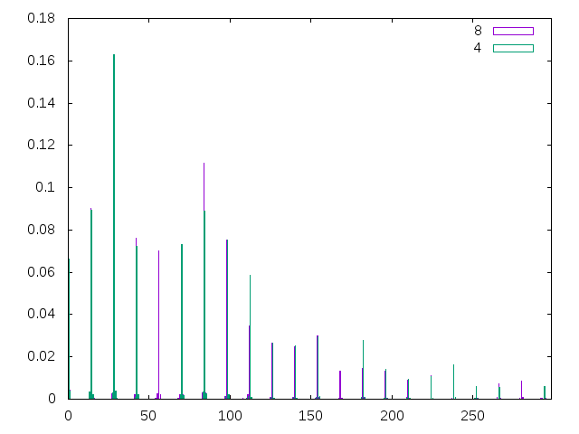
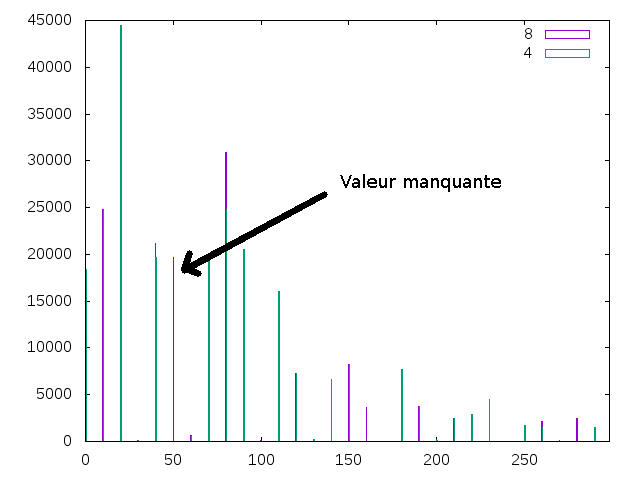

semaine8
Pour pouvoir comparer les images entre elles, il faut qu'elles soient comparables. Pour rendre deux images Im et In comparables, nous compressons In avec Qm puis nous compressons les deux avec Q = 100. Cela permet entre autre de faire apparaitre les valeurs manquantes dans l'histogramme des valeurs des coefficients DCT.
1 er marqueur : les valeurs manquantes
La compression des images avec Q = 100 fait apparaitre les valeurs manquantes. La compression avec un certain Q ne donnera que des valeurs multiples de ce Q. Si deux images n'ont pas été compressées avec le même Q, les multiples seront différents, et donc les valeurs manquantes également. Il faut cependant recaler les valeurs sur leurs multiples respectifs, en effet, à cause des arrondis de la DCT, les valeurs s'éparpillent autour des multiples, comme illustré figure 1 et figure 2. Le problème de ce marqueur est qu'il peut confondre les frères et soeurs des parents qui ont un Q proche.

Figure 1: Valeurs des coefficients DCT rassemblées autour des multiples

Figure 2: Valeurs des coefficients DCT calées sur les multiples
2 eme marqueur : les coefficients nuls
Un coefficient DCT mis à 0, même avec les erreurs d'arrondis, a très peu de chances de devenir autre chose que 0. Le nombre de coefficients DCT nuls dans l'image est un indicateur sur la plus forte compression qu'a pu subir l'image. Ainsi, si une image Im a plus de coefficients nuls qu'une image In, c'est que dans l'historique de compressions de Im un des Qm a été plus petit que le plus petit des Qn, donc que leur historique de compression est différent, et donc Im ne peut pas être de parent de In.
3 eme marqueur : les images identiques
Ce marqueur garantit qu'une image est l'enfant direct d'une autre. Si à l'issue des transformations appliquées aux images pour les rendre comparables elles sont toutes deux identiques, c'est que l'image In était une génération plus haut dans l'arbre de phylogénie, et avait jusque là le même historique. Cela permet de simplement reconstruire l'arbre si toutes les images sont présentes, mais si une image vient à manquer, tous les enfants de cette image seront absents de l'arbre.